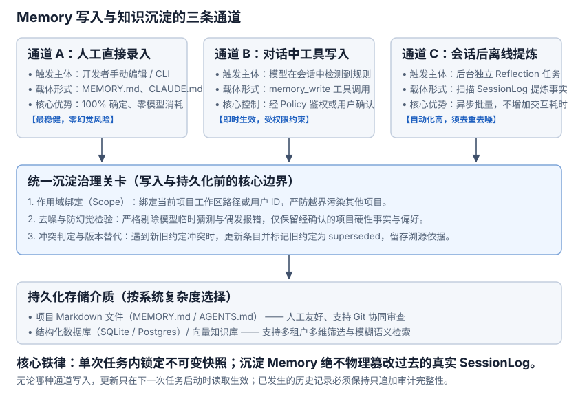

Memory：选择跨会话保留的知识
1. 问题起点：新会话需要知道什么？
- 用户（会话 A）：“这个项目使用 uv，Python 命令请使用 uv run。”
- 模型：“好的。”
- （结束会话 A，新建会话 B）
- 用户（会话 B）：“怎样运行测试？”
新会话没有前面的消息，模型就缺少项目约定。Memory 的作用是把值得复用的知识单独保存，在后续任务需要时重新提供给模型。它不是修改模型参数，也不是把所有会话历史都放进请求。
- 值得保留：已确认的项目事实、长期偏好和经过验证的经验，例如“项目使用 uv”。
- 需要重新核对：测试结果、临时报错和文件具体行内容会随代码变动而失效，不能视为恒定事实，引用或排查时必须重新核实最新状态。
2. Session、Memory 与 Context 怎样配合？
- Session 保存发生过什么：按会话保存问题、回答与工具回执，供查询或续接对话。
- Memory 保存值得复用什么：保存选定的事实或偏好，说明来自哪里、适用于哪个项目或用户。
- Context 决定本次发送什么：把本次问题、选中的历史和适用记忆组装成模型输入，并检查完整请求的预算。
一次使用记忆的任务可以分为以下步骤：
- 应用确定范围：根据当前工作区或用户配置，指定可读取的记忆来源。
- Memory 读取资料：返回内容及其来源；条目多时，也可以先查找与任务相关的条目。
- Context 检查输入：将记忆与其他输入一起计量，再决定是否能够发送。
- 模型参考资料回答：需要操作文件时提出工具调用，执行仍经过 Tools 与 Policy。
记忆可以由用户直接维护，也可以从会话记录中提取。因此 Session 能提供写入来源，但 Memory 不必依赖自动扫描历史。模型提出的候选与用户已经确认的事实要分清；记忆中的“允许覆盖文件”也不能替代实际权限检查。
没有记忆与读取失败是两种结果：前者可以正常继续，后者应按应用约定明确处理，严禁在代码中用 try...except Exception: return None
悄悄当成“没有记忆”：
- 没有记忆（预期内的空状态）：未创建
MEMORY.md（捕获FileNotFoundError）或正文仅含空白。此时解析函数返回None，流程正常推进，本次请求不注入记忆消息。 -
读取失败（非预期的系统异常）：文件存在但无访问权限（
PermissionError）、编码损坏（UnicodeDecodeError）、软链接指向工作区外部（越界）或目标是目录。若静默吞掉异常，会导致关键项目规范悄然失效，引发模型盲目操作。工程上应按约定显式处理：- 强一致模式（本项目采用）：在发出第 1 步模型请求前直接抛出异常中断执行（Fail-Fast），强制用户修正损坏的配置文件后再运行；
- 容错辅助模式（如 pi）：若记忆仅作参考，可捕获异常并在控制台/日志中显式输出 Warning 告警并标记运行降级，绝不装作无事发生。
3. Memory 的存储介质与数据结构（从纯文本到多维命名空间）
设计 Memory 时，首先要划分“存什么内容”以及“采用什么数据结构和存储介质”：
- 存什么内容（核心原则）：只存跨会话反复使用的项目事实与规范（如依赖管理工具、编码约束）和经过验证的排障经验（现象、原因与解法）。临时报错、单行代码或瞬时测试结果应在需要时通过工具重新核对，不属于持久记忆；固定的多步执行流程则适合打包成 Skill。
按系统复杂度从低到高，业界常见的存储形态与数据结构分为四类：
A. 单份 Markdown 纯文本（如 <workspace>/MEMORY.md、CLAUDE.md）
直接存放在项目工作区根目录（仅对当前项目生效）或用户全局配置目录（如 ~/.agent/MEMORY.md）。纯文本天然具备极高的可读性，便于开发者直接查看修改，并能直接纳入
Git 进行代码审查（PR）。适合规则条目较少、以核心项目约定为主的阶段。
B. 目录索引 + 分主题 Markdown 文件（如 MEMORY.md + memories/*.md）
主文件只保留精简的目录与一句话摘要，详细的模块规范或故障案例拆分到独立主题文件中。适合知识按模块或主题明显分块、单文件已经过长导致阅读困难的场景。
C. 结构化关系表与层次化命名空间（如 SQLite memories 表、LangGraph BaseStore）
将每条知识保存为包含完整元数据的结构化条目。适合多租户系统、多项目隔离，或需要程序并发读写、保留更正审计轨迹的场景。一个标准的结构化条目通常包含以下元数据：
- 来源（Source）：记录产生该知识的原始会话 ID、用户任务或文档链接，便于后续追溯和人工核实。
- 适用范围（Scope）：明确知识属于全局用户、组织团队还是特定项目，在读取和检索时作为硬性过滤条件。
-
有效状态（Status）：标记当前为有效（
active）、已废弃（superseded）还是已删除（deleted），避免检索出过期规则。 - 确认依据（Confirmation）：区分是由用户明确声明的事实，还是模型生成的候选建议；未经人类确认的模型猜测不能作为硬规则生效。
D. 向量索引或混合检索库（如 SQLite FTS + Embedding 向量库）
在结构化条目之上额外建立关键词倒排索引与语义向量索引。适合条目极多、用户提问用词与记忆原文字面差异较大的场景，但会引入向量计算、分块嵌入和检索评测的额外工程成本。
4. 核心机制：写路径（维护/提炼）与读路径（检索/注入）
明确了数据结构后，必须定下 Memory 的两条核心流水线：知识如何沉淀落盘（写路径）与知识如何进入模型输入（读路径）。注意：“存在哪里”与“谁来读写”是正交的工程选择。
4.1 写路径（Write Pipeline）：知识如何沉淀落盘？
知识写入可以由人工主导，也可以由模型或后台流程辅助。无论底层是 Markdown 还是数据库，写入都可以归纳为三条通道：

- 通道 A：人工直接录入与命令维护（最稳健，零幻觉）：用户确认一条长期约定后，直接编辑
MEMORY.md或在终端输入/memory命令。注意：普通对话中模型口头回答“好的，我记住了”只会追加在SessionLog中，绝不自动篡改物理记忆文件。 - 通道 B：对话中模型主动调用工具（即时响应，受权限约束）：用户明确要求“请记住这条规范”时，模型发起
memory_write工具调用；该动作必须经由Policy权限检查或人工弹窗确认后方可落盘。 - 通道 C：会话后离线反思提炼（高自动化，须去噪去重）：任务或会话结束后，后台异步 Reflection 任务扫描
SessionLog，提炼出值得复用的事实批量写入。该通道不阻塞在线交互，但必须增加防幻觉校验，防止把模型的临时猜测沉淀为永久事实。 -
统一写入治理关卡：所有通道在落盘前均须完成三件事：绑定作用域（Scope）防止越界；去噪核查剔除瞬时报错；冲突替代若新旧约定矛盾，更新正文并标记旧条目为
superseded。
4.2 读路径（Read Pipeline）：知识如何进入模型输入？
知识保存后，必须在恰当的时机组装到模型请求中才能真正生效。常见的读取注入方式同样有三条通道：

- 通道 1：任务启动时全量加载（短规则首选，零延迟，非 RAG）：
run_task()启动时自动读取当前工作区的MEMORY.md全文，由Context Manager组装为系统参考消息。优点是稳定直接、模型无需先调工具找文件；代价是每次请求都要消耗固定输入预算，仅适合几十行以内的项目约定。 - 通道 2：每次请求前动态检索（经典被动 RAG，海量条目首选）：
- 技术本质：本质就是经典的 RAG（检索增强生成，Pre-retrieval RAG） 模式在记忆系统中的落地。
- 执行机制：在组装每步请求前，外围框架先按租户或项目范围硬过滤，再用当前用户问题做关键词（FTS/BM25）或向量相似度（Embedding Top-K）计算，仅提取最相关的几条记忆切片拼入 Prompt。
- 交互特征：模型被动接收，无感知。外部系统在请求发出前静默完成检索与组装，模型不需要先调用工具，适合多租户背景、条目海量且单条规则相对独立的知识库场景。
- 通道 3：运行期模型按需查阅（渐进式披露 + Agentic RAG，大文档首选）：
- 技术本质：将 “渐进式披露（Progressive Disclosure）” 的信息分层策略与 “基于工具的主动式检索（Agentic RAG）” 相结合。
- 执行机制：
- 第一层（轻量路标，渐进披露）：初始输入绝不塞入海量正文，仅提供简短的主题目录或索引大纲（如列出有哪些可用规则模块），以极低的 Token 成本让模型“知道系统里存在什么”。
- 第二层（按需检索，工具召回）：模型在多步执行中遇到专业问题时，自主发起工具调用——若查阅某模块正文调用
read_memory(topic)（定向抽取）；若在长文档中找细节，则自主提炼精准搜索词调用search_memory(query)（触发底层的全文或向量召回）。
- 交互特征：模型主动驱动，支持多跳。由模型根据当前任务上下文判断“查不查、去哪查、搜什么词”，甚至在结果不符时换词重搜。适合体系复杂、单篇篇幅巨大的架构指南与业务文档。
4.3 读写协同的三大工程铁律
- 铁律一：单次任务内锁定不可变快照：多步任务执行中途如果允许底层记忆文件被随时改动，会导致第 1 步与第 2 步模型看到的项目约定不一致，引发严重的推理混乱。因此，修改后的记忆只能在下一次任务生效，当前任务内部必须锁定启动时读取的内存快照。
- 铁律二：三层冲突消解优先级：当新旧约定发生冲突时，不能让模型凭运气猜测，系统指令必须声明明确的裁决准则：本次用户明确要求 > 当前读取的 Memory 默认约定 > 历史对话中的旧记录。
- 铁律三：停止注入 vs 物理抹除：删除 Memory
的本质是停止在后续任务中作为背景资料自动加载。它绝不能、也不应该去重写或篡改过去已保存在
SessionLog里的真实对话与工具审计历史。
5. 主流 Agent 的 Memory 架构全景与源码方案对比
在不同类型的 Agent 系统中，由于交互目标、执行环境和记忆生命周期不同，Memory 的设计呈现出截然不同的架构流派。以下结合固定开源源码与官方机制，系统拆解业界最具代表性的五大方案：
5.1 方案一：文件约定与层级目录发现（pi / Claude Code / Cursor）
这是代码开发类 Agent 最主流、最轻量的方案。其核心逻辑是：不依赖任何外部数据库，直接将纯文本文件作为知识载体，利用操作系统的目录树结构实现规则的层级继承与自动发现。
- 数据载体与多层作用域：
- 全局用户级（User-Level）：存放在用户根目录（如
~/.claude/CLAUDE.md或~/.pi/agent/），记录跨所有项目的通用偏好（如“使用中文回答”、“默认使用 TypeScript 严格模式”）。 - 项目仓库级（Project-Level）：存放在工作区根目录（如
CLAUDE.md、AGENT.md、.cursorrules），记录当前代码库的构建工具、测试命令与架构约束。 - 子目录与路径级（Path-Level）：存放在特定模块目录（如
.claude/rules/*.md或.cursor/rules/*.mdc），通过 glob 路径规则仅在编辑特定文件时动态激活。
- 全局用户级（User-Level）：存放在用户根目录（如
- 读取与加载机制（以 pi 源码为例）：
在 pi 源码中，resource-loader.ts 的
DefaultResourceLoader实现了目录递归扫描：- 向上递归发现：从当前工作区
cwd出发向上遍历父目录，结合全局agentDir，查找所有上下文文件并读取为{ path, content }对象。读取异常时记录警告而不中断主流程。 - 组装系统提示词：在 system-prompt.ts
中，
buildSystemPrompt()遍历已加载的上下文文件，将文件路径与正文格式化为系统提示词中的projectContext独立段落。
- 向上递归发现：从当前工作区
- 工程实践（以 Claude Code 为例）：
Claude Code 通过
CLAUDE.md体系实现了灵活的记忆管理：支持开发者通过终端命令/memory实时查看和人工编辑生效的记忆列表；在较新版本中，还支持模型在识别到明确的项目约定后，提炼出单条事实供用户确认后存入.claude/记忆目录。 - 架构取舍与适用产品：
- 适合的产品形态：本地开发者工具与个人工作区 Agent（如 Claude Code、Cursor、CLI 编程助手、本地文档/研究工作流 Agent）。这类产品直接跑在用户本机、有持久化项目目录，项目规范本来就该跟着代码仓库走。
- 优势：高透明度、零外部依赖；纯文本天然支持通过 Git 进行版本控制、差异比对与代码审查（PR），非常契合团队工程协作。
- 局限与代价：缺乏动态语义检索能力。当规范文件体积庞大时，每次请求全量拼入系统提示词会大量挤占模型的输入 Token 预算。
5.2 方案二：中间件切入与虚拟文件存储解耦（Deep Agents）
在个人电脑上运行 Agent（如本地开发中的 Cursor、Claude Code）时，硬盘是持久化的，直接读 ~/.claude/CLAUDE.md 很自然。但把 Agent
部署到云原生无状态容器时，本地磁盘随时会被销毁，同一用户的两次请求还可能漂移到不同容器，根本无法假定本地有固定文件。
Deep Agents 的做法一句话就能讲透：把底层存储“伪装”成虚拟 Markdown 文件，让模型像改普通文件一样去读写，再由中间件在启动时把内容拼进系统提示词。
- 数据到底存在哪儿（“文件”只是假象，底层看挂的
backend）：模型看到的永远是“路径 + Markdown 文本”（官方约定为
AGENTS.md，例如/memories/AGENTS.md）。但调一次write_file("/memories/AGENTS.md", ...)数据物理上到底落去哪儿，完全取决于挂载的backend：挂载的 Backend 物理上到底存在哪儿？ 新开一个会话还在吗？ StateBackend（默认）没有硬盘文件也没有数据库，只是当前会话内存里的一个 Python 字典（ state["files"]）不在（换 thread_id就清空，只能当单次会话草稿，做不到跨会话记忆）FilesystemBackend宿主机本地硬盘上真实的 AGENTS.md文件在（前提是还跑在同一台持久化机器上） StoreBackend远端数据库（LangGraph BaseStore，如 Postgres / SQLite）里的一条 KV 记录在（脱离容器，跨会话、跨节点共享） CompositeBackend（路径路由器）按目录前缀分流：如 /memories/转发给StoreBackend存库，其余路径转发给StateBackend存临时字典/memories/在，其他路径不在 - 怎么读取、层叠与复写：
Deep Agents 在 memory.py 中定义了
MemoryMiddleware，并与文件工具共用同一个backend：- 显式声明与顺序层叠：启动时传入有序的
sources路径列表（如先全局、后项目/租户），靠后的文件在提示词中出现得更晚，语义上补充或覆盖前面的通用约定。 - 启动拉取（
before_agent）：在 before_agent(state) 中，若 State 尚未加载记忆，则通过backend.read()异步拉取sources内容写入memory_contents。 - 请求注入（
modify_request）：在 modify_request(request, state) 中，将格式化后的记忆内容拼接到SystemMessage发给模型。 - 复用文件工具复写：不另造
update_memory()专用工具，模型在对话中直接调用write_file/edit_file修改/memories/AGENTS.md；路由自动写回StoreBackend持久化，并在下一次新会话启动时由before_agent加载生效。
- 显式声明与顺序层叠：启动时传入有序的
- 架构评价与存在的问题（实事求是）：
- 真实定位：没有特别理想的独立产品形态，不建议作为目标架构去照搬。它本质上是框架为了“一套代码本地/云端通吃 + 蹭模型
edit_file能力”做出的省事妥协。真做本地工具直接用方案一，真做云端多租户产品直接用方案四或方案五，都比这套更干净。 - 存在的问题（抽象泄漏与工程代价）：
- 假文件系统硬套数据库，两头不讨好：既失去了真实文件的 Git 版本控制与编辑器直读生态，又失去了数据库的 Schema
校验、字段级原子更新、TTL 过期与并发锁（多会话并发
edit_file极易覆盖冲突或字符串匹配失败）。 - 隐式路径路由增加心智负担：同样调用
write_file，换个backend或路径前缀，底层可能是在改内存字典、写本地硬盘或写 Postgres 数据库；开发者排障不直观，模型也全靠 Prompt 软约束来区分“哪儿存得住、哪儿会丢”。 - 安全边界模糊：工作文件与系统记忆共用同一套写文件工具，必须额外在路径前缀上叠权限拦截，防止模型误改或被 Prompt Injection 篡改系统规则。
- 中间件切碎控制流：数据在多个钩子间隐式流转，排查最终发给模型的 Prompt 成本高；且记忆来源必须在启动前显式声明，无法像本地目录那样按工作区自动发现。
- 假文件系统硬套数据库，两头不讨好：既失去了真实文件的 Git 版本控制与编辑器直读生态，又失去了数据库的 Schema
校验、字段级原子更新、TTL 过期与并发锁（多会话并发
- 真实定位：没有特别理想的独立产品形态，不建议作为目标架构去照搬。它本质上是框架为了“一套代码本地/云端通吃 + 蹭模型
5.3 方案三：类操作系统分层内存与模型自管理（MemGPT / Letta）
面向超长周期、无限轮次的交互，MemGPT（现为 Letta）借鉴操作系统分层存储，把当前上下文窗口当内存（Working Context），把外部持久化数据库当外存，并把记忆的读写决策交给模型自己。
- 三层分别存在哪儿（均为持久化数据库，没有“易失二级缓存”）：
以 Letta 为例，底层统一使用数据库（本地默认 SQLite，生产常用 PostgreSQL +
pgvector），三层按用途和查法划分：层次 物理存储（以 Letta 为例） 存什么 怎么进窗口 Working Context
（含 Core Memory 区块）Prompt 上下文窗口；其中 Core Memory 持久化在 blocks表系统指令 + Core Memory（受限的 persona人设与human用户画像）+ 近期对话与摘要每次请求自动从 blocks表读入 System Prompt 记忆区块Recall Storage
（回想存储）关系表 messages（SQLite / Postgres）全部原始对话与工具记录（按时间追加，永不因窗口裁剪丢失） 模型调 conversation_search按关键词或时间查回Archival Storage
（归档存储）向量库（如 Postgres + pgvector）外部切片导入的原始资料 + 模型主动写入的长期笔记 模型调 archival_memory_search做语义检索 - 三层如何写入与交互：
核心规则：Recall 与 Archival 之间没有自动同步，一切流转都以 Working Context 为中枢。
┌──────────────────────────┐ │ 数据库 blocks 表 │ └──────────┬───▲───────────┘ ①每次请求自动加载 │ │ ②模型调 core_memory_append/replace 触发更新 ▼ │ ┌────────────────────────────────────────────────────────┐ │ Working Context（上下文窗口：[Core Memory 区块] + 近期对话）│ └───────┬──────▲──────────────────────────┬──────▲───────┘ │ │ │ │ ③系统自动│ │④模型调 │⑤模型调│⑥模型调 追加落库 │ │conversation_search 捞回 │insert│search 召回 (窗口满时│ │ │写入 │(或外部导入) 踢出旧话)▼ │ ▼ │ ┌──────────────────────────┐ ┌──────────────────────────┐ │ Recall Storage (messages)│ │ Archival Storage (向量库) │ │ 全部原始对话流水表 │ │ 长期笔记 + 导入文档切片 │ └──────────────────────────┘ └──────────────────────────┘ （两者之间无自动同步通道）- Core Memory 区块 ⇄
blocks表：Core Memory 是 Working Context 里 System Prompt 内的固定记忆区块。每次请求前系统从blocks表读入最新persona/human；模型调core_memory_append/core_memory_replace由系统改表，下一次模型请求即按新内容重新注入（注：中途改 System Prompt 会破坏 Prompt Cache）。 - Working Context ⇄ Recall Storage：每条消息由系统自动持久化追加到
messages表。当上下文窗口 Token 快满（如 70%）时，系统发“窗口压力警告”提醒模型先把重要结论存进 Core 或 Archival，随后将最老对话踢出窗口压缩为摘要；原文仍留在 Recall 表，模型按需调conversation_search捞回。 - Working Context ⇄ Archival Storage：模型调
archival_memory_insert存入长笔记（也支持外部批量导入原始切片），缺资料时调archival_memory_search召回作为工具回执。 - Recall 与 Archival 之间：无自动同步；原始对话必须经模型在窗口中看到（或查出）后，自行提炼并调
archival_memory_insert写入。
- Core Memory 区块 ⇄
- 架构取舍与适用产品：
- 适合的产品形态：强人设、超长周期陪伴型 Agent（AI 伴侣、游戏 NPC、一对一长期导师）。严肃办公/企业工具很少照搬，因为模型自主改记忆太不可控。
- 优势：突破上下文窗口上限，支持跨月/跨年的持久人设演化。
- 代价：强依赖模型判断力，容易把废话或幻觉写进 Core Memory，或频繁无意义检索拖慢响应。
5.4 方案四：多租户命名空间与语义检索键值库（LangGraph / LangChain Long-Term Memory）
在企业级应用中，Agent 往往需要同时服务数千名用户、处理跨多个团队的项目知识，因此多租户隔离、权限归属与混合检索能力成为首要考量。LangGraph 的 Long-Term Memory 体系提供了工业级的抽象实现。
- 核心抽象与数据模型（BaseStore）：
LangGraph 引入了跨会话持久化的 BaseStore（底层可对接 Postgres、Redis 等存储），采用层级化的
(namespace, key, value)三元组组织数据：- 命名空间隔离（Namespace）：通过元组实现多维作用域路由。例如：
- 个人偏好：
("users", user_id, "profile") - 团队规范：
("orgs", org_id, "teams", team_id, "rules") - 任务文档：
("projects", project_id, "docs")
- 个人偏好：
- 键值读写与向量混合检索：支持
store.get(namespace, key)精确获取，更支持store.search(namespace, query="...", limit=K)在指定命名空间下直接调用向量模型进行 Top-K 语义检索。
- 命名空间隔离（Namespace）：通过元组实现多维作用域路由。例如：
- 双通道写入管道（Two-Lane Writing）：
- 实时通道（In-Loop Tool）：对话过程中，Agent 可以直接调用记忆更新工具，经业务校验后写入指定命名空间。
- 异步反思通道（Offline Reflection Node）：会话结束后，系统在后台启动一个独立的反思 Agent（Reflection
Node）。该节点扫描本次对话的
SessionLog，提取出有价值的新事实、合并冲突偏好后调用store.put()批量落库，完全不增加用户在线问答的等待耗时。
- 架构取舍与适用产品：
- 适合的产品形态：企业级 SaaS 与 B 端多租户业务 Agent（如多租户工单客服、CRM 销售助手、企业内部研发/运营知识协作平台）。这类产品同时服务成千上万个用户和组织，硬性要求严格的租户/团队/项目权限隔离，以及“精确查配置 + 语义搜经验”的混合查询。
- 优势：租户隔离边界清晰，权限管控严格；既能精确读取关键配置，又能模糊匹配非结构化经验，还能通过后台反思异步沉淀。
- 局限与代价：架构非常重，必须依赖外部数据库、Embedding 服务与后台反思调度任务，初始搭建与运维成本高。
5.5 方案五：事件驱动事实沉淀与用户可控画像（OpenAI ChatGPT / Codex / AgentScope Java）
从架构本质上看，这套方案相当于把方案三的 Core Memory 单独拎出来，只保留
human（用户画像/偏好）这一半：砍掉模型自改人设（persona）和主动翻旧账工具，把控制权收归“系统静默打理 +
用户面板兜底”。
- 相比方案三的两项关键改良：
- 从“整段自由文本”拆成“单条独立事实（Fact List）”：每条偏好带独立 ID 落库，前端才能做成可视化清单，让普通用户点一下就删掉某一条。
- 从“模型调工具查”改为“系统静默筛选注入”：记忆筛选在请求发出前由后台完成，模型全程无需调检索工具，低延迟且可控。
- 机制与交互流程：
- 隐式提炼与事件触发：用户在对话中透露持久特征（如“在 macOS 用 zsh，Python 优先 3.12”），模型回复时附带轻量的
Memory Update Event，新增或更新单条事实。 - 前端提示与可视化面板：界面提示“已更新记忆”，用户可在设置面板随时查看、编辑或删除任意一条（新版 ChatGPT 虽也补充了参考历史对话能力，但依然坚持系统主导、设置页一键开关的克制路线）。
- 按需筛选与紧凑注入：条目少时全量打包；累积到几十上百条时，后台按当前问题做相关性检索（4.2 节通道 2），只挑相关条目拼成紧凑清单放进 System Prompt：
[已知用户偏好与背景约定] - 用户偏好使用 Python 3.12，函数必须包含类型标注 - 代码风格要求精简，不输出多余的寒暄与废话 - AgentScope Java 的实践：在 AgentScope
Java memory.md 中，专门通过
LongTermMemory接口与压缩整理流程，明确区分“完整执行历史（Session Log）”与“提炼后的长期记忆条目”。
- 隐式提炼与事件触发：用户在对话中透露持久特征（如“在 macOS 用 zsh，Python 优先 3.12”），模型回复时附带轻量的
- 架构取舍与适用产品：
- 适合的产品形态：面向普通大众的 C 端通用聊天与个人助理产品（如 ChatGPT、豆包、Kimi、个人助手
App）。普通用户不会写
CLAUDE.md，也不懂命名空间，需要无感沉淀 + 可视化删改。 - 优势：用户零门槛、零额外工具调用延迟，且可控性强、便于随时纠错。
- 代价：自动提炼容易把临时状态（如“我这周在度假”）误记成永久偏好；新旧偏好冲突时需额外消解逻辑。
- 适合的产品形态：面向普通大众的 C 端通用聊天与个人助理产品（如 ChatGPT、豆包、Kimi、个人助手
App）。普通用户不会写
5.6 五大主流方案综合对比矩阵
| 方案流派 | 代表系统 | 适合的产品形态 | 存储介质 | 写入方式与主体 | 读取与注入方式 | 核心优势 | 主要代价与瓶颈 |
|---|---|---|---|---|---|---|---|
| 文件约定与层级发现 | pi、Claude Code、Cursor | 本地工作区 / 开发者 Agent（IDE、CLI 编程助手、本地文档工作流） | 工作区真实 Markdown / MDC 纯文本（全局 → 项目 → 子目录） | 用户人工维护为主；或专有命令 / 确认后落盘 | 任务启动时扫描目录全量读取，拼入 System Prompt | 高透明度、零外部依赖、天然支持 Git 代码审查 | 文件变大后侵占上下文预算，无语义检索 |
| 中间件与虚拟文件解耦 | Deep Agents | 无理想独立产品形态（仅属重度绑定 LangGraph 时的过渡妥协，不建议照搬） | 虚拟路径 AGENTS.md + backend（StateBackend 内存字典 /
StoreBackend 数据库等）
|
复用 write_file / edit_file 按路径前缀路由写入 |
before_agent 拉取进 State，modify_request 注入系统消息 |
复用模型文件编辑能力，一套代码靠换 Backend 兼容本地与云端 | 假文件硬套数据库无 Schema/并发锁；隐式路由心智负担重；写工具安全边界模糊 |
| 分层内存与自管理 | MemGPT / Letta | 强人设、超长周期陪伴型 Agent（AI 伴侣、游戏 NPC、一对一导师） | Working Context + 向量库 + 事件库 | 模型在对话中自主调用内置工具更新自身记忆 | Core Memory 每步全量可见，归档库由模型按需调工具检索 | 支持无限轮次演进，Agent 自主演化人设与认知 | 重度依赖模型决策水平，易产生幻觉与无效调用，严肃工具极少照搬 |
| 多租户命名空间 Store | LangGraph | 企业级 SaaS / B 端多租户 Agent（客服、CRM、企业研发/运营助手） | Postgres / Redis + 向量索引，按 (namespace, key, value) 隔离 |
工具实时更新 + 后台 Reflection 节点离线提炼 | 图节点依赖注入，支持 Key 精确查找与向量语义搜索 | 租户与权限隔离清晰，支持混合复杂查询与离线提炼 | 架构重，需外置数据库、Embedding 与后台反思调度流水线 |
| 事件驱动画像事实 | ChatGPT、Codex、AgentScope | C 端通用聊天与个人助理产品（ChatGPT、通用个人助手 App） | 结构化 Fact List 数据库 | 模型检测到偏好自动触发事件写入；用户面板可编辑 | 请求前筛选相关条目，格式化为事实列表拼入请求 | 用户零门槛、体验自然丝滑，支持可视化纠错 | 容易误记临时特征，新旧冲突时需要消解逻辑 |
6. 本项目当前选择：一份人工维护的项目文件
阶段 0–5 已实现会话保存、续接、上下文预算与项目记忆。阶段 5 使用工作区根目录的
MEMORY.md：由用户编辑，每次任务开始时读取，路径与正文一起进入预算检查，同一任务使用同一份内容。
选择它是因为少量项目约定可以直接检查，不需要先解决提取准确率与检索质量。文件读取见 memory.py；初始化位置、源码入口和调用流程见 阶段 5：怎样接入现有闭环。
7. 期望达到的效果
- 跨会话复用：新会话获得当前项目的已保存知识，而无需加载其他会话的全部历史。
- 范围与来源明确：能查明读取的是哪个项目的哪份资料。
- 更正及时生效：修改或删除记忆后，新任务不再从记忆来源加载旧内容。
- 预算和权限有效：记忆计入输入预算，工具执行仍由 Policy 决定。
具体检查步骤见 阶段 5：怎样验证。